▲ 수성못과 그 너머 수성구 도심. 못 둘레는 2,020m다
"수성못 둘레가 2,020m라는데, 앞산 케이블카는 5분이면 올라간다고?" 대구 도심에서 가을 하루를 보낸다면 이 두 곳을 묶는 게 가장 간단하다. 이 기사는 2026년 10월 16일 현재 한국관광공사 TourAPI 정보와 앞산케이블카 공식 누리집(요금·운행시간·FAQ)을 직접 열어 확인한 내용을 기준으로 쓴다. 공식 자료로 확인하지 못한 것은 확인하지 못했다고 적었다. 앞산케이블카 공식 누리집 바로가기
💡 먼저 결론
10월 현재 앞산 케이블카는 평일 첫 출발 10:30, 정상 마지막 출발 19:00이고, 금·토·일·공휴일은 21:00까지다. 개인 왕복은 어른 14,000원이다. 수성못은 상시 개방이라 시간 제한이 없어, 낮에 수성못을 걷고 해 질 무렵 앞산으로 넘어가는 순서가 무난해 보인다(순서는 이 기사의 제안이다). 단풍 절정 시기는 공식 자료로 확인하지 못했다.
1. 한눈에 보기 — 공식 자료로 확인한 것과 못 한 것
▲ 수성못과 그 너머 수성구 도심. 못 둘레는 2,020m다 ⓒ 한국관광공사
수성못은 1925년 일제강점기에 농업용수를 대려고 만든 인공 못으로, 지금은 수변 휴식 공간으로 쓰인다. 앞산은 대구 남구에 있는 해발 660m의 산이고, 그 북쪽 계곡에 조성된 앞산공원은 대구에서 가장 큰 도시자연공원이다. 두 곳 모두 한국관광공사 TourAPI에 등록돼 있어 입장료와 개방 정보를 비교해 볼 수 있었다. 이 글에 쓴 사진은 한국관광공사 공개 사진이며, 상당수는 녹음이 짙은 철에 찍힌 것으로 보여 단풍이 한창인 모습이 아니다. 올해 단풍 상황은 방문 전에 따로 확인하기 바란다.
| 항목 | 수성못(수성유원지) | 앞산공원·케이블카 |
|---|---|---|
| 주소 | 대구 수성구 두산동 일대 | 대구 남구 앞산순환로 574-114(케이블카) |
| 개방 | 상시 개방, 연중무휴 | 공원 연중무휴, 케이블카 연중무휴(우천·점검 시 변경) |
| 입장료 | 별도 요금 안내 없음(TourAPI에 요금 항목 없음) | 공원 주차 무료, 케이블카는 유료 |
| 규모 | 면적 21만 8000㎡, 못 둘레 2,020m | 공원 면적 508만 평, 케이블카 5분 |
| 문의 | 수성유원지 053-666-2863, 관광안내소 053-761-0645 | 케이블카 053-656-2994, 앞산공원 053-803-7420 |
수성못 쪽은 공식 페이지에서 입장료를 따로 안내하지 않는다. TourAPI에도 요금 항목이 비어 있어 "별도 요금이 없다"고 단정하기보다 "요금 안내가 확인되지 않는다"에 가깝다는 점을 밝혀 둔다.
2. 수성못 — 2,020m 한 바퀴, 오리배는 사라졌고 분수는 월요일에 쉰다
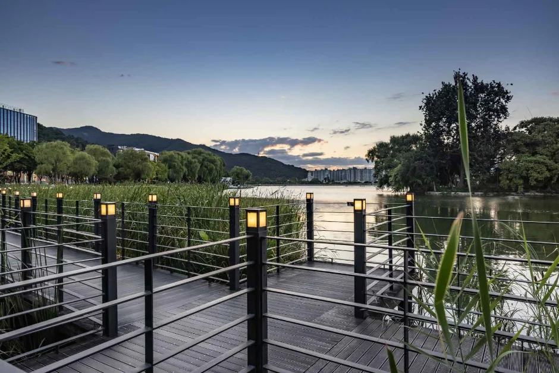
▲ 수성못 가장자리 데크 산책로. 조명 기둥이 늘어서 해 질 무렵 걷기 좋다 ⓒ 한국관광공사
TourAPI 설명에 따르면 수성못은 저수량 70만, 면적 21만 8000㎡, 못 둘레 2,020m다. 둘레가 2km 남짓이라 천천히 걸어도 한 시간이면 충분한 것으로 보이지만, 이 시간은 공식 수치가 아니라 이 기사의 추정이다. 못 주변에는 벤치와 수목, 산책로가 있다. TourAPI 소개문에는 유람선 선착장과 오리배 보트놀이도 적혀 있지만, 이 문구는 현재 상황과 맞지 않는다. 매일신문 2024년 11월 19일 보도에 따르면 수성못 오리배는 운영업체와 한국농어촌공사의 임대차 계약이 2024년 10월 끝난 뒤 11월 14일 74대가 모두 철거되면서 36년 만에 운영을 멈췄고, 공사는 새 사업자를 모집하지 않기로 했다. 그 뒤 재개됐다는 소식은 찾지 못해, 이 글은 오리배 운영을 전제로 하지 않는다. 2026년 9월 매일신문 보도에는 수성못에 앞으로 수상공연장이 조성될 예정이라는 수성구청장 발언이 나온다.
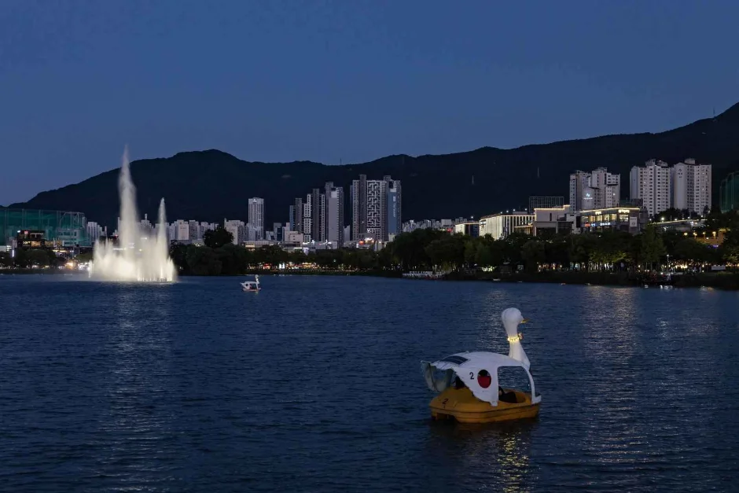
▲ 해 진 뒤 수성못. 수면 위로 분수가 솟고 백조 모양 보트가 떠 있다(한국관광공사 사진으로, 오리배는 2024년 11월 운영이 중단됐다) ⓒ 한국관광공사
밤에는 못 주변 조명과 도심 야경, 분수 쇼를 볼 수 있다. 분수는 ‘수성 미디어아트 음악분수’다. TourAPI는 음악분수가 매주 월요일 쉰다고 안내하고, 운영 기간과 시간은 "홈페이지 참조"라고만 적어 놓았다. 2024년 3월 20일 보도(뉴스서울)에서 수성구는 그해 10월까지 월요일을 뺀 하루 7회, 회당 11분 운영하고, 오후 6시까지는 분수만, 저녁 7시 이후에는 음악과 조명을 더하며, 메인 쇼 ‘골든 러브’는 토·일 오후 8시에 한다고 밝혔다. 다만 이는 2024년 일정이라 2026년 10월 현재 운영 여부와 시간은 확인하지 못했다. 월요일에 분수를 보려는 계획은 피하고, 방문 전 수성유원지(053-666-2863)에 문의하는 편이 안전하다. 수성구청 누리집 바로가기
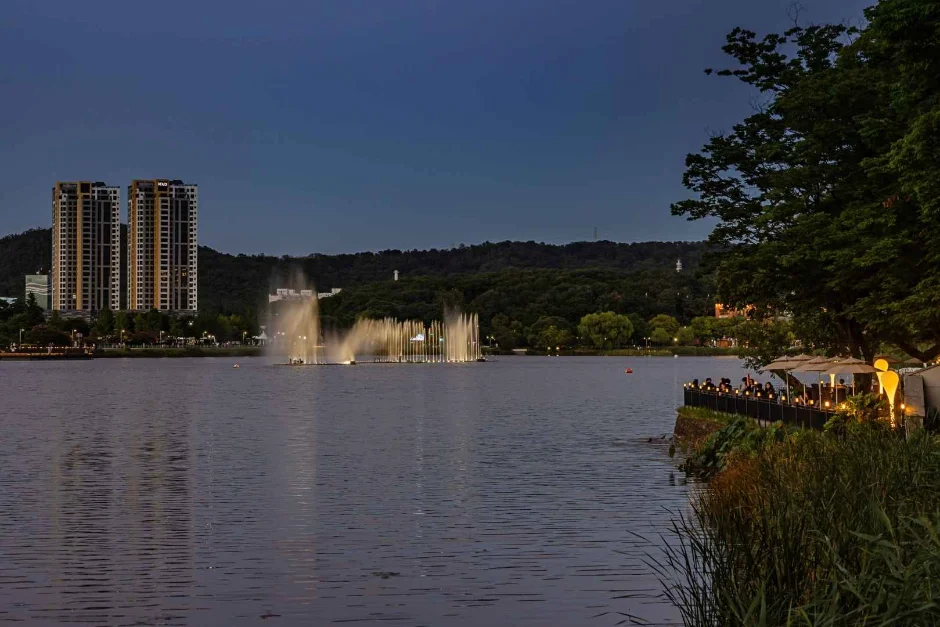
▲ 해 질 녘 수성못의 분수. 월요일은 음악분수가 쉰다 ⓒ 한국관광공사
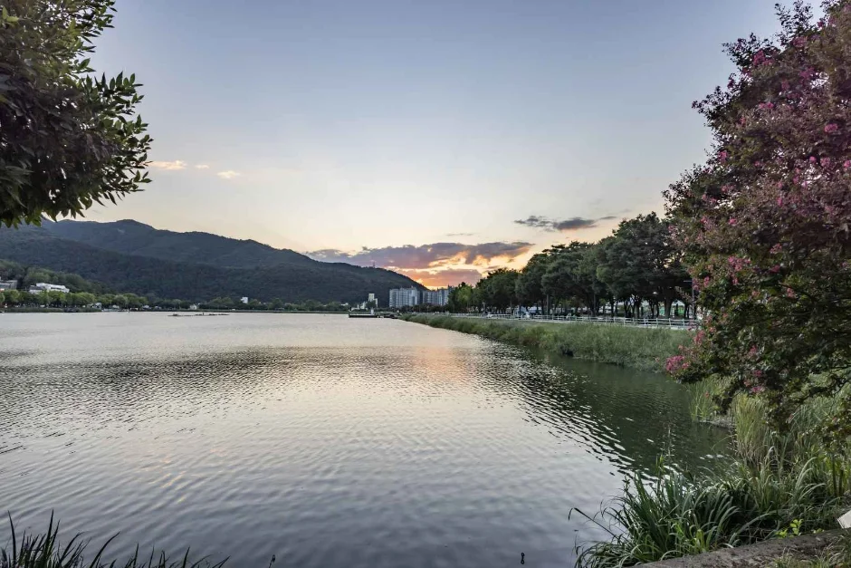
▲ 저녁 무렵 수성못 물가. 산책로를 따라 못을 한 바퀴 돌 수 있다 ⓒ 한국관광공사
| 항목 | 내용 | 확인 수준 |
|---|---|---|
| 개방 | 상시 개방, 연중무휴 | 한국관광공사 TourAPI |
| 못 둘레 | 2,020m | 한국관광공사 TourAPI |
| 음악분수 휴무 | 매주 월요일 | 한국관광공사 TourAPI |
| 음악분수 운영 기간·시간 | 홈페이지 참조(2026년 일정 미확인). 2024년에는 10월까지 하루 7회·회당 11분 | TourAPI, 2024년 3월 언론 보도(2026년 미확인) |
| 오리배 | 2024년 11월 운영 중단·철거, 재개 소식 확인되지 않음 | 매일신문 2024년 11월 보도 |
| 단풍 절정 | 공식 시기 미확인(11월 초라는 매체 보도 있음) | 단일 매체, 미확인 |
3. 주차 — 수성못은 어디에 세우고, 앞산은 무료일까
수성못 주차는 가장 확인이 어려웠다. 2025년 4월 3일 매일신문은 수성못 일대 공영주차장을 수성못(109면), 상동덕화(12면), 함장(74면) 3곳뿐이라고 전하며 들안길·수성못 일대 주차난이 심해지고 있다고 보도했다. 이 숫자는 언론 보도에서 인용한 것이다. 수성구청이나 시설공단의 공식 안내에서 주차장별 면수와 현행 요금은 찾지 못했다. 이전에 인터넷에 돌던 "상동 109면, 이용료 없음" 글은 날짜와 출처가 불분명해 이 글에서는 사실로 쓰지 않는다. TourAPI는 수성못 주차를 "가능"으로만 표기한다. 수성구는 2025년 3월부터 구내 공영주차장 14곳의 빈자리를 보여주는 스마트주차정보시스템을 정식 운영하고 있으나, 수성못 주차장이 그 14곳에 들어 있는지는 확인하지 못했다. 주말·행사 때는 자리가 부족할 수 있으니 대중교통이나 걸어서 접근할 수 있는 외곽 주차를 함께 염두에 두는 편이 낫다.
앞산은 반대로 공식 자료가 비교적 분명하다. TourAPI의 앞산공원 정보에는 주차 가능, 요금 무료로 적혀 있고, 앞산케이블카 누리집은 내비게이션에 '앞산공원관리사무소'를 입력하고 인근 주차장을 이용하라고 안내한다. 주차장에서 승강장까지는 걸어 올라가야 한다. 누리집은 공영주차장에서 매점을 지나 낙동강 승전기념관, 이시영 선생 순국 기념탑을 거쳐 가는 길을 설명하며, 갈림길에서 왼쪽 길은 계단이 없지만 포장이 울퉁불퉁하다고 알린다. 몸이 불편한 분은 공원 입구에서 말하면 차량을 통과시켜 주고, 공원 이용객이 적은 5~6시 이후에는 차량 출입이 가능하다는 FAQ도 있다.
| 장소 | 확인된 내용 | 출처·한계 |
|---|---|---|
| 수성못 공영주차장 | 109면(요금은 공식 확인 못 함) | 2025년 4월 매일신문 보도 |
| 수성못·상동 일대 공영주차장 | 수성못 109면, 상동덕화 12면, 함장 74면(3곳) | 2025년 4월 매일신문 보도, 수성구청·시설공단 공식 확인 못 함 |
| 앞산공원 | 주차 가능, 무료 | 한국관광공사 TourAPI |
| 앞산케이블카 승강장 | 공원관리사무소 인근 주차장 이용, 도보 이동 | 앞산케이블카 누리집 |
| 앞산 해넘이전망대 | 주차 가능, 무료 | 한국관광공사 TourAPI |
4. 앞산 케이블카 — 10월 운행시간과 요금표
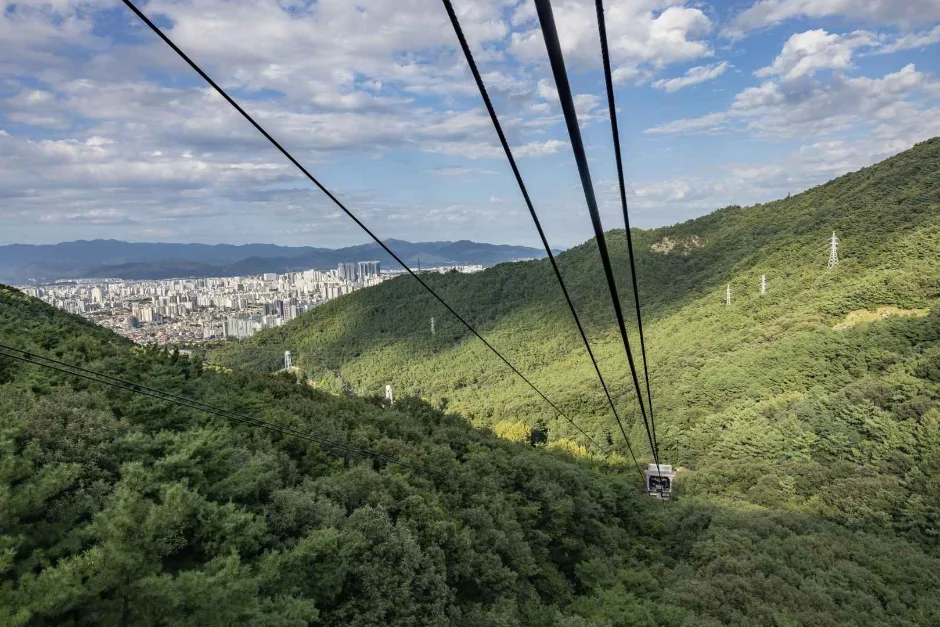
▲ 케이블카에서 내려다본 앞산 능선과 대구 시가지 ⓒ 한국관광공사
앞산케이블카 누리집 제원에는 48인승 반기 2대가 왕복하며, 운행거리 847.3m, 출발지 해발 180m에서 도착지 해발 510m까지 5분이 걸린다고 적혀 있다. 한국관광공사 공원 소개는 정상 부근까지 총연장 790m라고 쓰는데, 두 수치가 달라 이 기사에서는 운영사 제원(847.3m)을 따랐다. 운행 간격은 평소 10~15분, 탑승객이 많으면 5분이고, 예약 없이 당일 현장 판매만 한다. FAQ에는 편도 5분, 왕복 10분(대기 시간 제외)이고 정상 체류 시간에는 제한이 없다고 적혀 있다. 같은 FAQ의 "정상 높이 해발 약 600m, 거리 약 800m"는 대략적인 표현이어서 제원표의 180m→510m, 847.3m와 단순 비교하기는 어렵다. 매표는 평일에는 승강장 2층, 주말·공휴일에는 1층 매표소에서 한다.
| 구분 | 왕복 | 편도 |
|---|---|---|
| 개인 대인 | 14,000원 | 10,000원 |
| 개인 소인(36개월~초등학생) | 10,000원 | 6,000원 |
| 단체 대인(30인 이상, 토·일·공휴일 제외) | 12,000원 | 8,000원 |
| 단체 소인 | 8,000원 | 4,000원 |
20% 할인 대상은 국가유공자, 75세 이상 경로, 중증장애 1~3급, 남구 주민(본인 한정), 시티투어 이용객이며 증빙서류를 내야 한다. 누리집은 누리집이나 매표소에 표시되지 않은 할인은 없다고 못박았다. 다만 같은 누리집 FAQ에는 "경로 할인은 없습니다"라는 문구도 남아 있어 요금표(75세 이상 경로 20%)와 어긋난다. 요금표가 최신일 가능성이 높아 보이지만, 해당되는 분은 매표소에 먼저 확인하는 편이 안전하다. 사용한 표는 환불·교환이 되지 않고, 탑승권은 당일에 한해 쓸 수 있다.
| 구분 | 첫 출발 | 정상 마지막 출발 |
|---|---|---|
| 10월 평일 | 10:30 | 19:00 |
| 10월 금·토·일·공휴일 | 10:30 | 21:00 |
| 11월 평일 | 10:30 | 18:30 |
| 11월 금·토·일·공휴일 | 10:30 | 20:30 |
✅ 케이블카 체크리스트
· 표시된 시간은 정상에서 출발하는 마지막 차 기준이다
· 매표는 마감 30분 전에 끝나므로 정상 체류 시간을 감안한다
· 연중무휴지만 우천·강풍·점검 때는 운행이 멈추거나 조기 종료될 수 있다
· 왕복표는 내려올 때 필요하니 잘 보관한다
5. 앞산전망대와 해넘이전망대 — 야경은 어디서 볼까
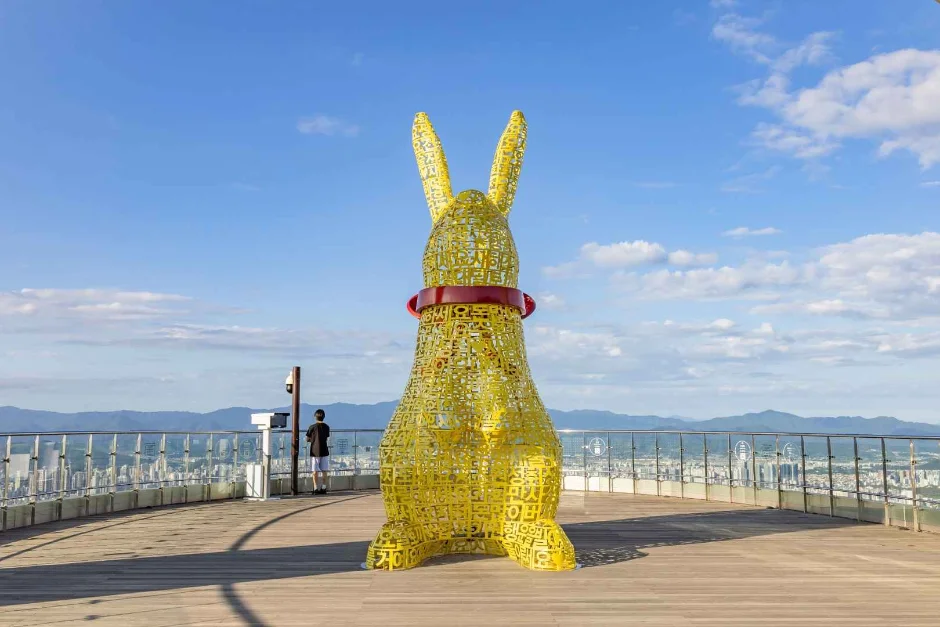
▲ 앞산 케이블카 일대의 전망 데크. 노란 토끼 조형물이 서 있다 ⓒ 한국관광공사
케이블카를 내리면 정상 쪽과 전망대 쪽 두 갈래 출구가 나온다. 누리집에 따르면 앞산 정상까지는 걸어서 20분 정도 걸리고, 승강장 뒤편 등산로로 앞산전망대까지는 5~7분 이동한다. 누리집은 이 전망대 가는 길을 가족·연인과 편안히 산책하기 좋은 길이라고 소개한다. 정상 방향 출구 쪽에는 식사와 음료를 파는 휴게소가 있고, 승강장 뒤편 등산로는 능선을 따라 산정산(항공무선표지소)·달비골·안지랑골·대덕산으로 이어진다. 앞산전망대는 어두워지면 조명이 자동으로 켜진다고 안내돼 있다. 정상에 화장실이 있고 승강장 2층에 국수·커피 매장이 있다. 편도로 올라온 사람을 위한 코스로는 상부승강장 왼쪽 출구의 소프라 옥상전망대를 보고 승강장 뒤편 등산로로 앞산전망대(5~7분)에 갔다가 승강장으로 돌아오는 길이 소개돼 있다. 정상에서 하부승강장까지 곧장 내려오는 등산로는 없고, 전망대 방향으로 내려가면 안일사 쪽으로 닿는다. 유모차는 계단과 경사 때문에 하부 승강장에 맡기고 올라가라고 안내한다.
▲ 대구 시가지 야경. 한국관광공사 앞산 해넘이전망대 사진 중 한 장이다 ⓒ 한국관광공사
같은 앞산에는 해넘이전망대도 있다. 2020년 8월 문을 연 전망대로, 앞산빨래터공원의 역사를 담아 ‘빨래를 짜는 모습’을 본뜬 건축물이다. TourAPI는 빨래터공원 소개에서 "공원 내에 해넘이 전망대가 있다"고 적고 있고(주소는 대구 남구 대명동), TourAPI 좌표로 계산하면 케이블카 하부승강장에서 직선으로 약 2km 서쪽이라 케이블카 상부의 앞산전망대와는 위치가 다르다. 다만 TourAPI가 해넘이전망대 소개문 첫머리에 "앞산전망대"라는 이름을 쓰고 있어 자료에 따라 두 곳을 같은 이름으로 부르는 경우도 있다. 현장에서 안내판으로 확인하기 바란다. TourAPI 기준 이용 시간은 09:00~22:00, 연중무휴, 요금 무료이며 주차도 무료다. 가는 방법은 큰골에서 케이블카를 이용하는 길(약 15분)과 안지랑골에서 등산로를 따라 걷는 길(약 1시간)이 소개돼 있다. 앞산공원 자체에는 TourAPI에 이용 시간이 하절기 10:00~19:00, 동절기 10:00~18:00으로 적혀 있어 늦은 시간 방문 때는 공원 쪽 개방 여부를 확인하는 편이 좋다. 대구관광 누리집 바로가기
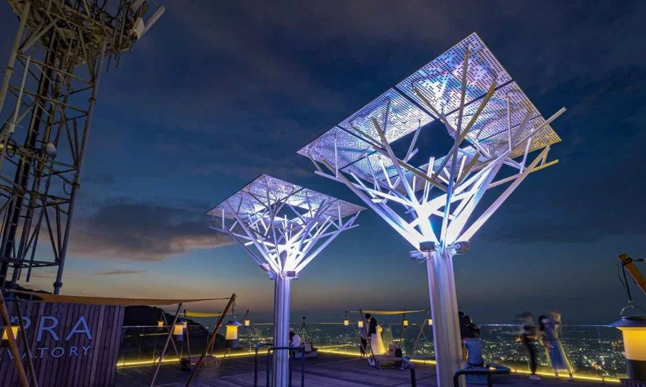
▲ 노을 무렵의 해넘이전망대. 목재 계단 길 끝에 원형 전망대가 있다 ⓒ 한국관광공사
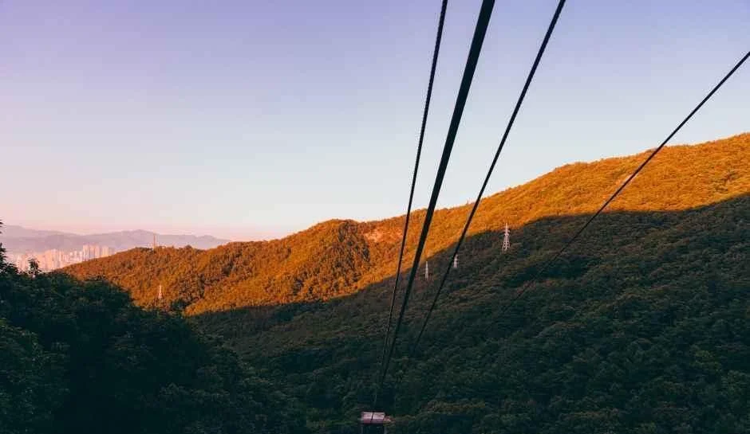
▲ 석양빛을 받아 주황색으로 물든 능선과 케이블카 줄. 앞산 케이블카 사진 중 한 장이다 ⓒ 한국관광공사
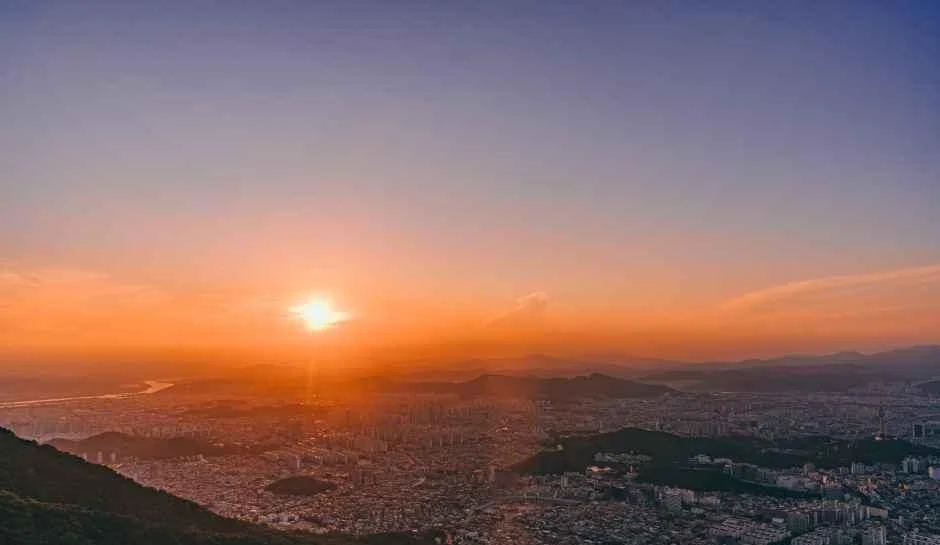
▲ 해 질 무렵 앞산에서 내려다본 대구 시가지. 한국관광공사 앞산 케이블카 사진 중 한 장이다 ⓒ 한국관광공사
6. 하루 코스 — 수성못에서 앞산까지, 차로 움직이는 법
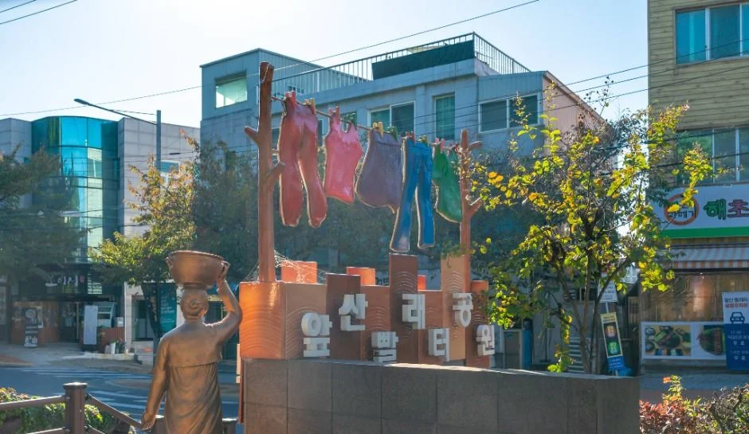
▲ 앞산빨래터공원 입구. 이 공원 안에 해넘이전망대가 있다 ⓒ 한국관광공사
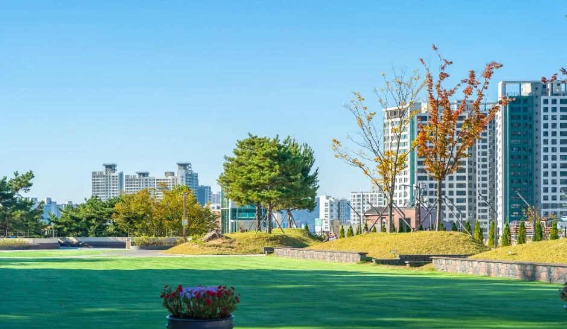
▲ 앞산빨래터공원 잔디 광장. 나뭇잎이 물들기 시작한 모습이다 ⓒ 한국관광공사
TourAPI에 등록된 좌표로 계산한 수성못과 앞산케이블카 하부승강장 사이의 직선거리는 약 2.8km다. 실제 도로 거리와 소요 시간은 공식 안내에서 확인하지 못했으니 내비게이션으로 보기를 권한다. 공식 시간표를 바탕으로 짠 순서는 다음과 같다(코스 구성은 이 기사의 제안이다).
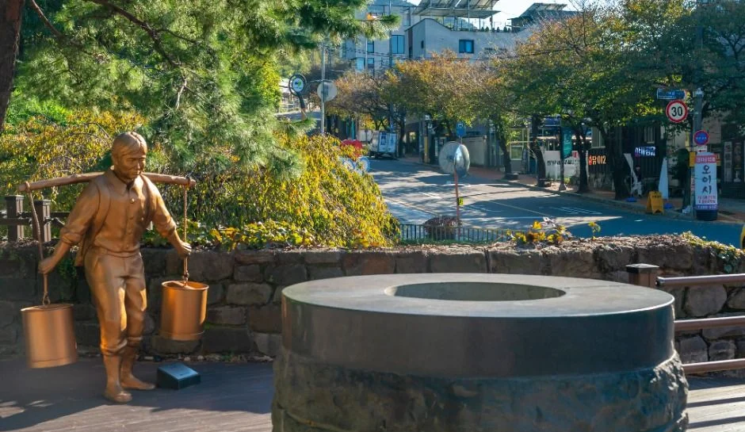
▲ 우물 조형과 청동상이 있는 앞산빨래터공원 한쪽 ⓒ 한국관광공사
| 순서 | 할 일 | 공식 시간 기준 메모 |
|---|---|---|
| 오후 2~3시 | 수성못 주차 후 2,020m 둘레 한 바퀴 | 상시 개방, 월요일은 분수 휴무 |
| 오후 4시 무렵 | 차로 앞산공원 관리사무소 인근으로 이동 | 공원 주차 무료 |
| 오후 4시 30분 | 주차장에서 걸어 케이블카 승강장으로 | 마지막 출발 평일 19:00, 매표는 30분 전 마감 |
| 오후 5시 30분 이후 | 케이블카로 올라 앞산전망대에서 일몰·야경 | 전망대 조명 자동 점등, 평일 정상 마지막 출발 19:00 |
10월 평일에는 정상 마지막 출발이 19:00이라 야경을 오래 보기 어렵다. 야경이 목적이라면 21:00까지 운행하는 금·토·일·공휴일을 고르는 게 낫다. 케이블카 매표는 마감 30분 전에 끝나므로, 마지막 차를 놓치지 않으려면 정상에서 내려올 시간을 미리 정해 두자. 같은 대구에서 케이블카를 타는 곳으로는 팔공산도 있다. 팔공산 쪽은 팔공산 케이블카 이용 정보를 참고하면 된다. 앞산 쪽으로 더 걷고 싶다면 TourAPI에 소개된 앞산자락길이 있다. 고산골 메타세쿼이아길에서 달비골 청소년수련관까지 이어지는 구간으로, 앞산순환도로에서 일정 높이 떨어져 등고선을 따라 기존 산책로와 오솔길을 연결해 누구나 편하게 걸을 수 있게 조성했다고 한다. 가을 단풍 시기는 앞산·수성못 모두 공식 자료로 확인하지 못했고, 11월 초 수성못 절정설은 단일 매체 보도라 확정으로 쓰지 않았다.
| 구간 | 확인된 정보 | 확인 못 한 것 |
|---|---|---|
| 수성못 둘레 | 못 둘레 2,020m, 상시 개방 | 한 바퀴 소요 시간(공식 자료 없음) |
| 수성못→앞산 | TourAPI 좌표 기준 직선 약 2.8km | 도로 거리·소요 시간 |
| 케이블카 하부→상부 | 편도 5분, 해발 180m→510m | — |
| 상부승강장→앞산전망대 | 등산로로 5~7분(누리집) | — |
| 상부승강장→앞산 정상 | 걸어서 약 20분(누리집) | — |
| 해넘이전망대(빨래터공원) | 09:00~22:00 무료, 주차 가능·무료(TourAPI) | 케이블카 전망대와의 정확한 관계 |
7. 정리
수성못 둘레 2,020m는 상시 개방, 앞산 케이블카는 10월 평일 19:00·주말 21:00까지다. 케이블카 개인 왕복은 어른 14,000원, 소인 10,000원이며 편도는 각각 10,000원과 6,000원이다. 앞산공원 주차는 무료로 안내돼 있다.
수성못 주차 요금, 음악분수 2026년 운영 일정, 단풍 절정 시기는 공식 자료로 확인하지 못했다. 수성못 오리배는 2024년 11월 운영이 중단돼 지금은 탈 수 없는 것으로 보인다. 이 기사는 2026년 10월 16일 기준이므로, 출발 전에 수성유원지(053-666-2863)와 앞산케이블카(053-656-2994)에 한 번 더 확인하자.